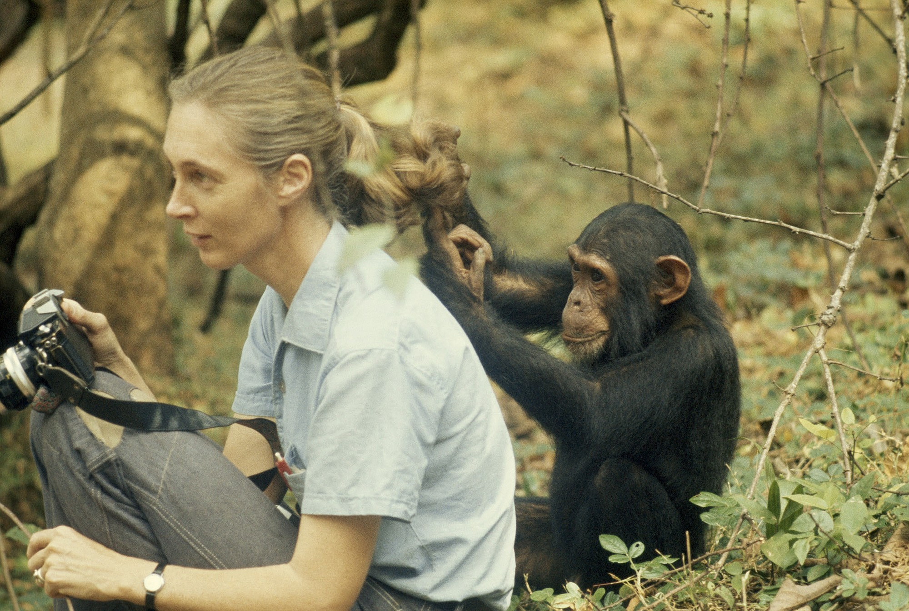

Jane
Dame Jane Goodall is a British primatologist, ethologist, anthropologist, and UN Messenger of Peace. Considered to be the world's foremost expert on chimpanzees, Goodall is best known for her 55-year study of social and family interactions of wild chimpanzees in Gombe Stream National Park, Tanzania. She is the founder of the Jane Goodall Institute and the Roots & Shoots program, and she has worked extensively on conservation and animal welfare issues. She has served on the board of the Nonhuman Rights Project since its founding in 1996.